Geolocalización
Para que funcione debes compartir tu ubicación en el navegador con esta página
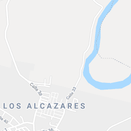
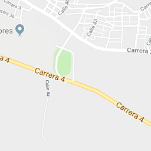
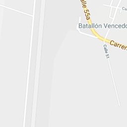
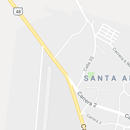
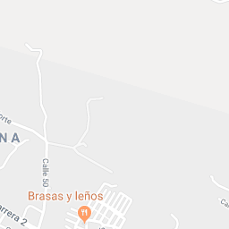
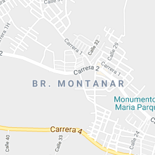
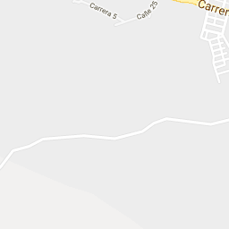
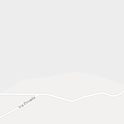
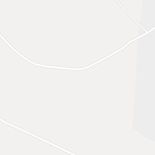
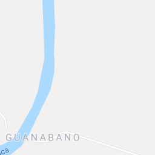
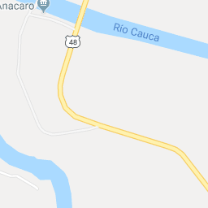
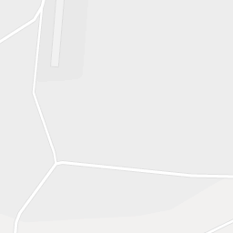
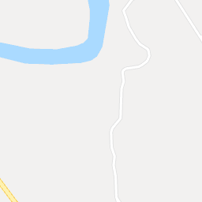
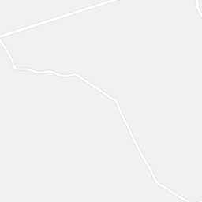
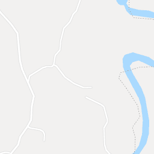
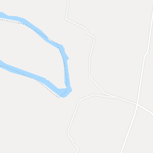
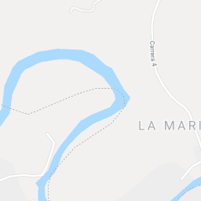
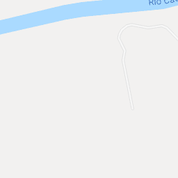
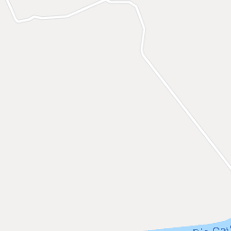
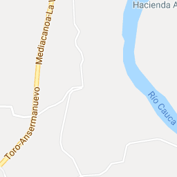
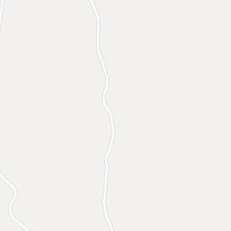
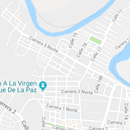
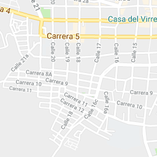
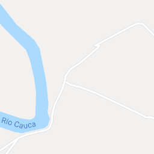
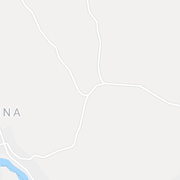
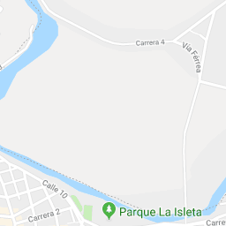
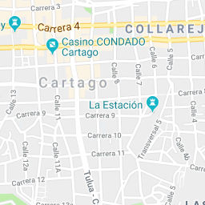
Datos de mapas
Datos de mapas ©2018 Google
Datos de mapas
Datos de mapas ©2018 Google
Datos de mapas ©2018 Google
Términos de uso
Informar de un error de Maps
200 m
Mapa
Relieve
Satélite
Etiquetas